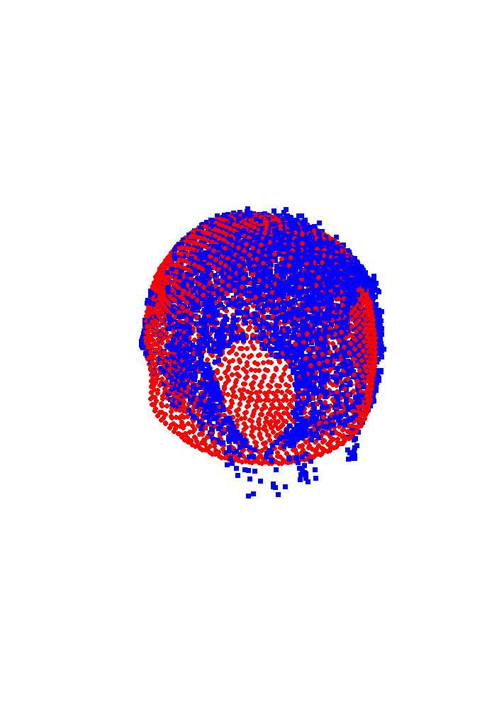
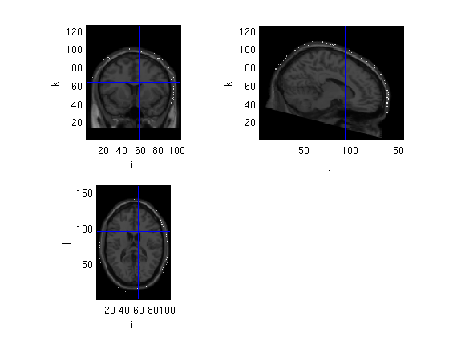
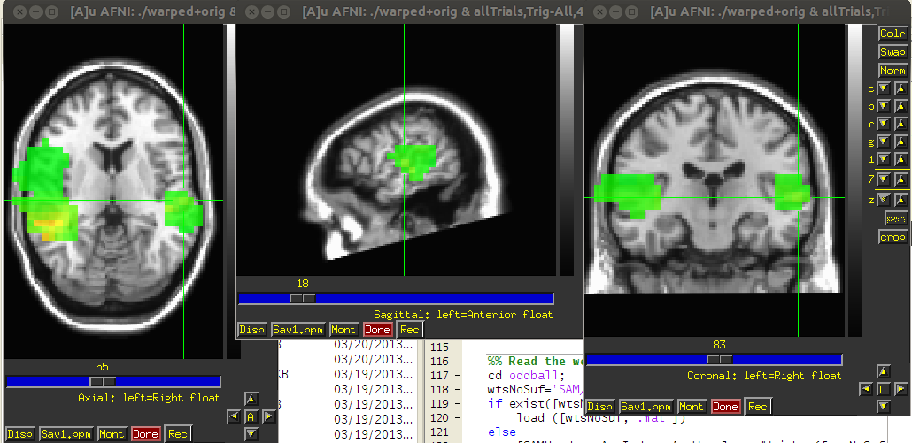
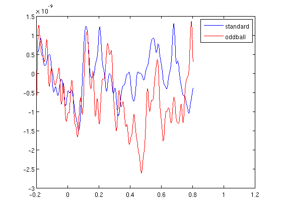
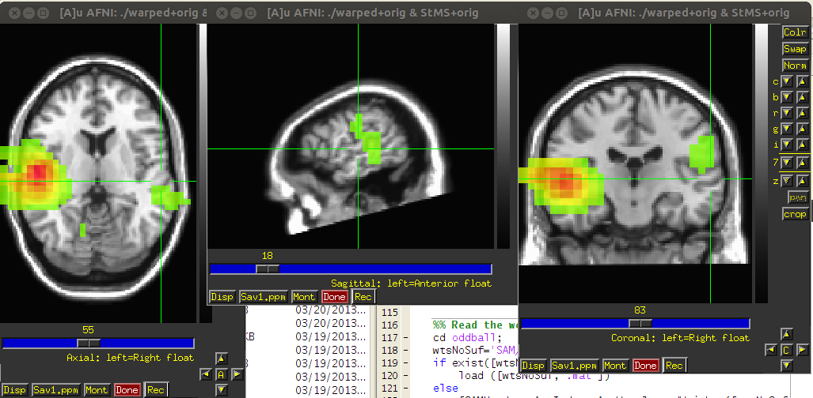
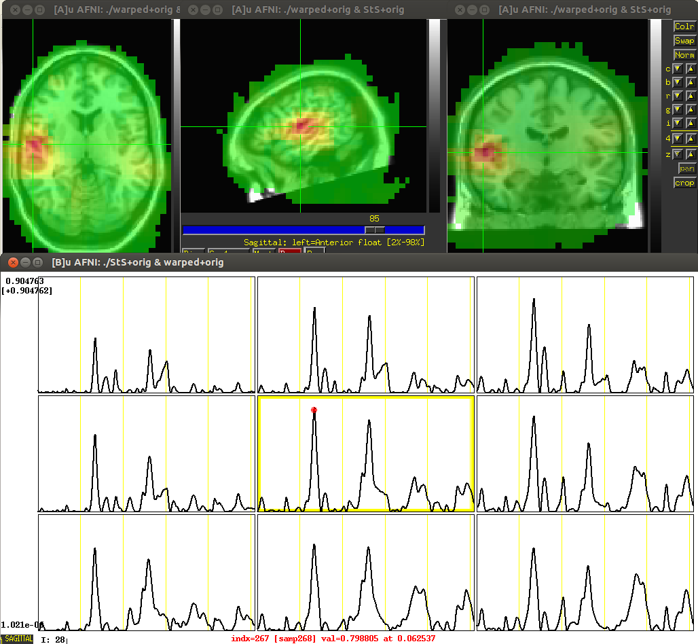
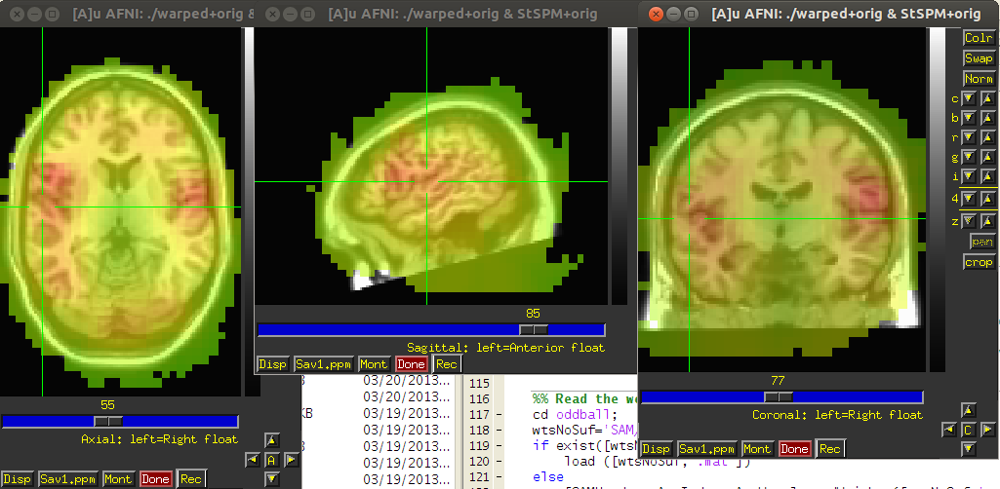

SAM beamforming
Contents
- Read and clean "Standard" trials
- Reject some trials
- Average standard
- Choose time of interest
- Create MarkerFile.mrk (text list of trials).
- Create a template MRI to fir the headshape
- Convert the headshape to BRIK format
- See the headshape on top of the MRI:
- SAMerf, evoked activity
- SAMspm, induced activity
- Read the weights and plot virtual sensors
- Use AFNI MATLAB library to make images and movies from virtual sensors
Read and clean "Standard" trials
cd oddball load trl % this was calculated in course6 (auditory data) source='c,rfhp0.1Hz'; cfg=[]; cfg.dataset=source; cfg.trialfun='trialfun_beg'; cfg2=ft_definetrial(cfg); cfg2.trl=trl; cfg2.demean='yes'; cfg2.baselinewindow=[-0.2 0]; cfg2.bpfilter='yes'; cfg2.bpfreq=[1 40]; cfg2.channel={'MEG'};%,'MEGREF'}; cfg2.feedback='no'; data=ft_preprocessing(cfg2);
evaluating trialfunction 'trialfun_beg'
reading header...
applying digital weights in the gradiometer balancing matrix
undoing the Supine balancing
found 1 events
created 1 trials
the call to "ft_definetrial" took 1 seconds and an estimated 0 MB
applying digital weights in the gradiometer balancing matrix
undoing the Supine balancing
processing channel { 'A22' 'A2' 'A104' 'A241' 'A138' 'A214' 'A71' 'A26' 'A93' 'A39' 'A125' 'A20' ...
the call to "ft_preprocessing" took 16 seconds and an estimated 137 MB
Reject some trials
cfg=[]; cfg.method='summary'; cfg.channel='MEG'; cfg.alim=1e-12; data=ft_rejectvisual(cfg, data); if ~exist('data.mat','file') save data data end
the input is raw data with 248 channels and 347 trials showing a summary of the data for all channels and trials computing metric [--------------------------------------------------------/] 336 trials marked as GOOD, 11 trials marked as BAD 248 channels marked as GOOD, 0 channels marked as BAD the following trials were removed: 5, 190, 206, 267, 274, 294, 310, 313, 337, 340, 347 the call to "ft_rejectvisual" took 50 seconds and an estimated 2 MB
Average standard
cfg=[];
cfg.latency=[-0.1 0.6];
cfg.trials=find(data.trialinfo==128);
cfg.feedback='no';
standard=ft_timelockanalysis(cfg,data);
the input is raw data with 248 channels and 336 trials Warning: The option cfg.latency is deprecated, support is no longer guaranteed selecting 231 trials selecting 231 trials the call to "ft_timelockanalysis" took 0 seconds and an estimated 2 MB
Choose time of interest
cfg=[]; cfg.interactive='yes'; cfg.layout='4D248.lay'; cfg.zlim=[-5e-14 5e-14]; fig1=figure; set(fig1,'Position',[0,0,800,800]); ft_multiplotER(cfg,standard); toi=[0.043657 0.075163]; % toi=[0.26 0.354]; close all
selection avg along dimension 1 selection dof along dimension 1 selection var along dimension 1 reading layout from file 4D248.lay the call to "ft_prepare_layout" took 0 seconds and an estimated 2 MB the call to "ft_multiplotER" took 1 seconds and an estimated 2 MB
Create MarkerFile.mrk (text list of trials).
for SAM we have to create a text file with the timing of the trials by condition, and we want a list of all the trials pulled together.
trigTime=(trl(:,1)-trl(:,3))./1017.25; Trig2mark(... 'All',trigTime',... 'Standard',trigTime(find(data.trialinfo==128),1)',... 'Oddball',trigTime(find(data.trialinfo==64),1)',... 'Novel',trigTime(find(data.trialinfo==32),1)');
Create a template MRI to fir the headshape
fitMRI2hs('c,rfhp0.1Hz')
evaluating trialfunction 'trialfun_beg'
reading header...
applying digital weights in the gradiometer balancing matrix
undoing the Supine balancing
found 1 events
created 1 trials
the call to "ft_definetrial" took 1 seconds and an estimated 0 MB
applying digital weights in the gradiometer balancing matrix
undoing the Supine balancing
processing channel { 'A1' }
reading and preprocessing
reading and preprocessing trial 1 from 1
the call to "ft_preprocessing" took 1 seconds and an estimated 0 MB
checkmeeg: no channel type, assigning default
checkmeeg: no units, assigning default
checkmeeg: transform type missing, assigning default
checkmeeg: data scale missing, assigning default
checkmeeg: data type is missing or incorrect, assigning default
converting units from 'm' to 'mm'
creating layout from cfg.grad
creating layout for bti248 system
the call to "ft_prepare_layout" took 0 seconds and an estimated 0 MB
converting units from 'm' to 'mm'
template: 1
Affine: [4x4 double]
sMRI: '/home/yuval/ft_BIU/matlab/spm8/canonical/single_subj_T1.nii'
Msize: 2
tess_mni: [1x1 struct]
tess_ctx: '/home/yuval/ft_BIU/matlab/spm8/canonical/cortex_8196.surf.gii'
tess_scalp: '/home/yuval/ft_BIU/matlab/spm8/canonical/scalp_2562.surf.gii'
tess_oskull: '/home/yuval/ft_BIU/matlab/spm8/canonical/oskull_2562.surf.gii'
tess_iskull: '/home/yuval/ft_BIU/matlab/spm8/canonical/iskull_2562.surf.gii'
fid: [1x1 struct]
path2file =
/home/yuval/ft_BIU/matlab/spm8/canonical/single_subj_T1.nii
Warning: QFORM0 representation has been rounded.
Warning: QFORM0 representation has been rounded.
Warning:
++ 3dWarp: AFNI version=AFNI_2011_05_26_1457 (Jun 15 2011) [64-bit]
++ Authored by: RW Cox
** AFNI converts NIFTI_datatype=2 (UINT8) in file T.nii to FLOAT32
Warnings of this type will be muted for this session.
Set AFNI_NIFTI_TYPE_WARN to YES to see them all.
++ Using minimum spacing of 1.442614 mm for new grid spacing
 Convert the headshape to BRIK format
hs2afni('small');
++ 3dUndump: AFNI version=AFNI_2011_05_26_1457 (Jun 15 2011) [64-bit] *+ WARNING: File hsTxt line 60: z coord=-33.1419 is outside -30.5876 .. 149.742 *+ WARNING: File hsTxt line 61: z coord=-37.6815 is outside -30.5876 .. 149.742 *+ WARNING: File hsTxt line 62: z coord=-40.8126 is outside -30.5876 .. 149.742 *+ WARNING: File hsTxt line 63: z coord=-42.9886 is outside -30.5876 .. 149.742 *+ WARNING: File hsTxt line 64: z coord=-50.0848 is outside -30.5876 .. 149.742 *+ WARNING: File hsTxt line 65: z coord=-31.2787 is outside -30.5876 .. 149.742 *+ WARNING: File hsTxt line 431: z coord=-31.1947 is outside -30.5876 .. 149.742 *+ WARNING: File hsTxt line 3453: x coord=77.58 is outside -72.8404 .. 77.1943 *+ WARNING: File hsTxt line 3460: x coord=77.5144 is outside -72.8404 .. 77.1943 *+ WARNING: File hsTxt line 3468: x coord=78.0692 is outside -72.8404 .. 77.1943 *+ WARNING: File hsTxt line 3474: x coord=77.3621 is outside -72.8404 .. 77.1943 ++ Output dataset ./hds+orig.BRIK
See the headshape on top of the MRI:
hdsh=ft_read_mri('hds+orig.BRIK'); hs_points=hdsh.anatomy>0; mri=ft_read_mri('warped+orig.BRIK'); mri.anatomy=mri.anatomy+hs_points; cfg=[]; cfg.interactive='yes'; figure, ft_sourceplot(cfg,mri); % if you have to nudge the MRI do it with AFNI % for Nolte model proceed to these steps % !~/abin/3dSkullStrip -input warped+orig -prefix mask -mask_vol -skulls -o_ply ortho % !meshnorm ortho_brainhull.ply > hull.shape
Warning: homogenous transformation might be incorrect for AFNI file Warning: homogenous transformation might be incorrect for AFNI file the input is volume data with dimensions [104 159 125] not downsampling anatomy the call to "ft_volumedownsample" took 0 seconds and an estimated 0 MB no functional parameter no masking parameter click with mouse button to reposition the cursor press n/l/r on keyboard to record a fiducial position press q on keyboard to quit interactive mode voxel 1033500, indices [52 80 63], location [43.1 86.7 61.0] mm scaling anatomy scaling anatomy scaling anatomy Warning: no colorbar possible without functional data nas = undefined lpa = undefined rpa = undefined the call to "ft_sourceplot" took 148 seconds and an estimated 1 MB
SAMerf, evoked activity
create a param file, copy the real time weights (rtw) used online to clean the data and run SAMcov, SAMwts and SAMerf
% param file is needed to tell SAM what to do cd .. createPARAM('allTrials','ERF','All',toi,'All',[(toi(1)-toi(2)) 0],[1 40],[-0.1 0.5],[],[],'MultiSphere'); if ~exist('oddball/oddball.rtw','file') !cp ~/SAM_BIU/docs/SuDi0811.rtw oddball/oddball.rtw end % to run SAM you have to be one folder above the data if ~exist('oddball/allTrials,Trig-All,43-75ms,1-40Hz,ERF.svl','file') !SAMcov -r oddball -d c,rfhp0.1Hz -m allTrials -v !SAMwts -r oddball -d c,rfhp0.1Hz -m allTrials -c Alla -v !SAMerf -r oddball -d c,rfhp0.1Hz -m allTrials -v -z 3 !cp oddball/SAM/*svl oddball/ end % now see the image in afni !~/abin/afni -dset warped+orig &
C O V A R I A N C E F I L E G E N E R A T O R v3.3 (4D/Linux) opening data file - done parsing 'allTrials' parameter file - done selecting filter parameters - done selecting time window parameters: - done 'oddball' uses 1 epochs, 248 channels, 786184 samples/channel/epoch ( 772.9 seconds/epoch, 772.9 seconds total) making 1.000 to 40.000 Hz IIR filter for MEG signals - done reading 'MarkerFile.mrk' - found 683 markers - done generating covariance file names: 'allTrials,1-40Hz/Alla' 'allTrials,1-40Hz/Global' generating segment list - done allocating memory - done reading & filtering data . . . 
SAMspm, induced activity
%SAMspm didn't work in this example, don't know why. % createPARAM('allinduced','SPM','All',toi,'All',[(toi(1)-toi(2)) 0],[1 40],[-0.1 0.5],[],[],'MultiSphere'); % !SAMcov -r oddball -d c,rfhp0.1Hz -m allinduced -v % !SAMwts -r oddball -d c,rfhp0.1Hz -m allinduced -c Alla -v % !SAMspm -r oddball -d c,rfhp0.1Hz -m allinduced -v
Read the weights and plot virtual sensors
cd oddball; wtsNoSuf='SAM/allTrials,1-40Hz,Alla'; if exist([wtsNoSuf,'.mat'],'file') load ([wtsNoSuf,'.mat']) else [SAMHeader, ActIndex, ActWgts]=readWeights([wtsNoSuf,'.wts']); save([wtsNoSuf,'.mat'],'SAMHeader', 'ActIndex', 'ActWgts'); %save in mat format, quicker to read later. end % after watching the SAMerf image we choose a voxel of interest vox=[1.5,-5.5,5.5]; % lets visualize the weights used for source loc to this voxel plotWeights(wtsNoSuf,vox) % now we want a virtual sensor created for this voxel to be created for 2 % conditions [voxi,allInd]=voxIndex(vox,100.*[... SAMHeader.XStart SAMHeader.XEnd ... SAMHeader.YStart SAMHeader.YEnd ... SAMHeader.ZStart SAMHeader.ZEnd],... 100.*SAMHeader.StepSize,1); wts=ActWgts(voxi,:); vsSt=ActWgts(voxi,:)*standard.avg; vsOd=ActWgts(voxi,:)*oddball.avg; plot(oddball.time,vsSt);hold on; plot(oddball.time,vsOd,'r'); legend('standard','oddball')
loading weights from *.mat file undoing the Supine balancing creating layout from data.grad creating layout for bti248 system the call to "ft_prepare_layout" took 0 seconds and an estimated 0 MB the call to "ft_topoplotTFR" took 1 seconds and an estimated 0 MB the call to "ft_topoplotER" took 1 seconds and an estimated 0 MB
Use AFNI MATLAB library to make images and movies from virtual sensors
% estimate noise ns=ActWgts; ns=ns-repmat(mean(ns,2),1,size(ns,2)); ns=ns.*ns; ns=mean(ns,2); % get toi mean square (different than SAMerf, no BL correction) samples=[nearest(oddball.time,toi(1)),nearest(oddball.time,toi(2))]; vsSt=ActWgts*standard.avg(:,samples(1):samples(2)); vsStMS=mean(vsSt.*vsSt,2)./ns; vsStMS=vsStMS./max(vsStMS); %scale %make image 3D of mean square (MS, power) cfg=[]; cfg.step=5; cfg.boxSize=[-120 120 -90 90 -20 150]; cfg.prefix='StMS'; VS2Brik(cfg,vsStMS); % Make a power movie of the whole trial vsStS=(ActWgts*standard.avg).*(ActWgts*standard.avg); ns=repmat(ns,1,size(vsStS,2)); vsStS=vsStS./ns; vsStS=vsStS./max(max(vsStS)); cfg=[]; cfg.step=5; cfg.boxSize=[-120 120 -90 90 -20 150]; cfg.prefix='StS'; cfg.torig=-200; cfg.TR=1/1.017; VS2Brik(cfg,vsStS); % SAMspm ns=ActWgts; ns=ns-repmat(mean(ns,2),1,size(ns,2)); ns=ns.*ns; ns=mean(ns,2); spm=zeros(size(ActWgts,1),1); tri=find(data.trialinfo==128); for triali=tri' vs=ActWgts*data.trial{1,triali}(:,samples(1):samples(2)); vs=vs-repmat(mean(vs,2),1,size(vs,2)); pow=vs.*vs; pow=mean(pow,2); pow=pow./ns; spm=spm+pow; display(['trial ',num2str(triali)]) end spm=spm./length(tri); cfg=[]; cfg.step=5; cfg.boxSize=[-120 120 -90 90 -20 150]; cfg.prefix='StSPM'; VS2Brik(cfg,spm); % see the SAMerf like image, SAMerf movie and the SAMspm like image;
WriteBrik verbose: Checking input data ...HEAD Info structure ...Scaling ...Writing StMS+orig.BRIK to disk ...Writing StMS+orig.HEAD to disk ...Done. WriteBrik verbose: Checking input data ...HEAD Info structure ...Scaling ...Writing StS+orig.BRIK to disk ...Writing StS+orig.HEAD to disk ...Done. trial 1 trial 2 trial 3 trial 4 trial 5 trial 6 trial 7 trial 8 trial 12 . . . trial 329 trial 333 trial 336 WriteBrik verbose: Checking input data ...HEAD Info structure ...Scaling ...Writing StSPM+orig.BRIK to disk ...Writing StSPM+orig.HEAD to disk ...Done.  